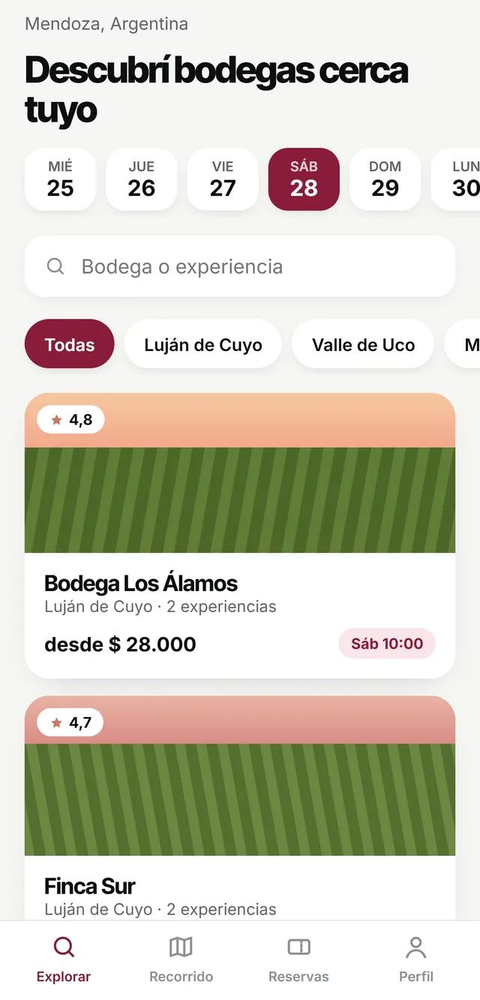

Concept project Tourism, mobile app
Ruta del Vino
A winery day planned as one route, with price, time and transport solved before leaving the hotel.



Project overview
- Industry
- Wine tourism
- Product
- Mobile app for visitors, bilingual
- My role
- Research, UX, UI and prototype
- Timeline
- 3 weeks
- Tools
- Figma, FigJam, JavaScript
- Status
- Concept, with a working prototype. Not launched
Self-initiated, with no client. Research is secondary (channel analysis, proto-personas and empathy map); wineries, prices and figures are fictional. The prototype was validated with a heuristic evaluation; user testing is planned. The prototype interface is in Spanish.
In one minute
Problem
Visitors search several websites, message each winery and arrange transport on their own. The day comes together at the last minute.
Approach
The day is the unit, not the winery. Experiences are added like items in a cart and the app warns when two times can’t be reached.
Outcome
A working prototype: choose an area, add wineries, see travel times, switch transport on and pay once.
01Context
Planning a winery day takes hours.
Visitors to Mendoza search wineries across several websites, message each one on WhatsApp to book and arrange transport on their own. Many experiences sell out without notice and the day comes together at the last minute.
- Compare experiences and prices in one place
- Book with instant confirmation
- Not having to drive after a tasting
- Fewer repeat questions on WhatsApp
- Fill off-peak time slots
- Reach international tourists
- Poor signal in rural areas
- Long distances between wineries
- Tourists who don't speak Spanish
02Research
How a day out is planned today.
I analyzed the channels used to book experiences today and put myself in the shoes of two kinds of tourist with very different needs.
Channels analyzed
Winery sites, agencies, social media with WhatsApp and map search.
Proto-personas
A domestic long-weekend tourist and an international visitor.
Empathy map
To understand what causes doubt right before booking.
Channel benchmark
| Feature | Winery site | Agency | Social & WhatsApp | Maps | Ruta del Vino |
|---|---|---|---|---|---|
| Several wineries together | Fixed packages | ||||
| Visible price | Sometimes | "Ask us" | |||
| Live availability | Some | ||||
| Instant confirmation | Some | Office hours | |||
| Day itinerary | Distances only | ||||
| Built-in transport | |||||
| In English | Some |
Swipe the table to see every column →
Takeaway: agencies handle logistics but with fixed packages; wineries have the information but each one separately. Nobody lets you mix freely and book everything at once.
Proto-personas
Sofía, 29
Designer · visiting from Buenos Aires for a long weekend"I want to visit three wineries on Saturday, but I don't know which ones are close or how to get between them."
Goals
- Make the most of a single day
- Know the total cost upfront
Frustrations
- Waiting for WhatsApp replies
- Can't drive after tasting
James, 41
Engineer · tourist from Canada, doesn't speak Spanish"Every winery replies in Spanish and I never know if the booking is confirmed."
Goals
- Book everything in English
- A voucher that works offline
Frustrations
- "Ask for price" listings
- Paying without knowing the currency
Empathy map · before booking
"Do I have time for three?" · Afraid of wasting the day on transfers · Wants a special experience, not a mass tour.
Beautiful social posts without price or schedule · Sites with contact forms · Reviews mentioning sold-out experiences.
Asks friends for recommendations · Opens ten tabs · Messages several wineries at once and waits.
"Book ahead, it fills up" · "Don't drive yourself" · "Valle de Uco is far, leave early".
Uncertainty about price and availability · Logistics · Language.
A planned, confirmed day · Knowing what it'll cost · Enjoying it without worrying about driving.
Key insights
Hidden prices stall bookings
"Ask for price" forces people to message and wait; many drop off right there.
Logistics outweigh the winery
The question isn't just "which winery?" but "how do I get there and back?".
People choose by area
People pick an area first (Luján, Uco, Maipú), then wineries that are close to each other.
The day is the unit
Nobody plans a single winery: they plan a day where times need to fit together.
03Definition
From tab chaos to a plan.
How might we…?How might we help visitors to Mendoza plan a winery day in minutes, with confirmed bookings and no worries about getting around?
Design principles
Price and time first
Shown on the card, before opening the detail.
The day as the unit
You book a route, not separate wineries.
Trust before paying
Instant confirmation, clear currency and a visible cancellation policy.
MVP MoSCoW prioritization
- Browse by area
- Prices and slots
- Day route
- Instant booking
- Transport
- Spanish and English
- Offline voucher
- Restaurants on the route
- Photo reviews
- Wine sales
- Accommodation
04Architecture
Explore, add, go.
The route works like a cart: you add experiences while exploring and book everything together at the end.
Sitemap
- Ruta del Vino
- Explore areas · filters
- Winery experiences · slots
- Area map
- My route timeline · transport
- Payment
- Bookings offline vouchers
- Profile language · currency · payments
- Explore areas · filters
Main flow: planning the day
05Wireframes
Structure first.
Low fidelity to organize the information on each screen. The numbers mark the decisions.
- Search by winery or experience type.
- Area as the first filter.
- Price and next slot on the card.
- Experiences as a comparable list, price on the right.
- Slots for the chosen day, without leaving the screen.
- "Add to route" instead of "Book".
- The day as a timeline.
- Travel time between stops.
- Transport as a toggle, not another screen.
- One code for the whole day, not one per winery.
- Stops with address and time.
- "Available offline" indicator.
06Decisions
What changed along the way.
Walking the wireframes through the proto-personas surfaced three issues that I solved before moving to UI.
The map as the main screen
Pretty, but on a phone the pins hid what matters: price and time.
List by area, map on demand
Cards show price and next slot. The map is one tap away for whoever needs it.
Booking winery by winery
Three separate payments and no guarantee the times would fit.
A route with time checks
You add experiences and the app warns if the distance makes a slot unreachable. One single payment.
Transport at the end, on another screen
It showed up after paying, when it was too late to consider it.
A toggle inside the route
Turned on with one tap, with the total updated instantly.
07Design system
Warm, local and readable in the sun.
A palette drawn from Malbec and vineyard sunsets, with high contrast because the app is used outdoors.
Color
#8A1C3AWhite 9.10:1 · AAA#B0466AWhite 5.34:1 · AA#4F6B2FWhite 6.04:1 · AA#C9785ADecorative#F8E6EAMalbec on top 7.58:1#0D0E10Typography
Components
Accessibility and context of use
- High contrast designed for reading in sunlight
- Voucher stored on the phone for areas with no signal
- Touch targets of at least 48 px
- Spanish and English, with currency and time format per language
- Sold-out slots struck through, not just greyed out
- Alt text on every winery photo
08Final UI
A Saturday planned in minutes.
From discovery to voucher, in high fidelity.
Descubrí bodegas cerca tuyo
Bodega Los Álamos
Luján de Cuyo · a 25 minSábado 14 nov
Tu recorrido
Sábado 14 · 3 bodegas · 42 kmConfirmá y pagá
Todo el día en un solo pago- Los Álamos · 10:00
- $ 28.000
- Finca Sur · 13:00
- $ 45.000
- Viñedos del Este · 16:30
- $ 30.000
- Traslado
- $ 30.000
- Total
- $ 133.000 ARS
¡Tu sábado está listo!
● Disponible sin conexión09Validation
Heuristic evaluation of the prototype.
Before taking it to users, I evaluated the interactive prototype against Nielsen's 10 heuristics and walked through the main tasks step by step: planning a day with several wineries, adding one from another area, turning on transport, paying and opening the voucher. Each issue has a severity rating, and I fixed the most serious ones in the prototype.
Findings
| # | Issue and fix | Heuristic | Sev. | Status |
|---|---|---|---|---|
| 1 | You could pick a time you can't reach because of the distance; the warning only showed up in "Recorrido".In the winery screen those slots now show "No llegás" before you pick them, with an explanation. | H5 · Error prevention | 3 | Fixed |
| 2 | Removing a stop couldn't be undone.The "Removed…" notice now has an "Undo" button. | H3 · User control and freedom | 2 | Fixed |
| 3 | Searching by area (e.g. "Uco") returned nothing, even though people think in areas.Search now matches areas too. | H2 · Match with the real world | 2 | Fixed |
| 4 | "Next 12:00" didn't say which day the slot was on.The label now shows the day: "Sáb 12:00". | H1 · Visibility of system status | 1 | Fixed |
| 5 | There's no direct way to the route from a winery's detail.Pending: today you get there via "Back" or from the notice after adding a winery. | H7 · Flexibility and efficiency | 1 | Pending |
Swipe the table to see every column →
Severity on Nielsen's scale: 1 cosmetic, 2 minor, 3 major, 4 catastrophic. I found no severity-4 issues.
Before and after
You could pick a time you can't reach because of the distance; the warning only showed up in "Recorrido".
In the winery screen those slots now show "No llegás" before you pick them, with an explanation.
Searching by area (e.g. "Uco") returned nothing, even though people think in areas.
Search now matches areas too.
Next step: user testing
An expert review finds known usability issues, but it doesn't measure how real people behave. The next step is a moderated test with the fixed prototype, using these targets and tasks:
User test tasks
| # | Task | Success if… |
|---|---|---|
| 1 | Plan Saturday with three wineries in Luján de Cuyo. | Reaches the route with three stops and no time conflicts. |
| 2 | You don't want to drive: sort out transport. | Turns on transport and understands the new total. |
| 3 | You're at the winery with no signal: show your booking. | Opens the voucher from Bookings in airplane mode. |
| 4 | Swap the lunch for another winery. | Replaces the stop without redoing the whole route. |
Participants: 6 people who travelled for leisure in the past year: 3 Spanish speakers and 3 non-Spanish speakers.
10Learnings
What I'm taking away.
- Shifting the unit from "winery" to "day" reshaped the whole architecture.
- Bilingual isn't just translation: currency, time format and expectations change too.
- Context of use (sunlight, no signal) drives concrete visual decisions.
- Test with real tourists in Mendoza during high season.
- A panel for wineries to manage capacity and prices.
- Recommendations based on each person's wine preferences.